Aim & launch
Pull back to charge, release, and let the board turn one shot into a chain of contacts.
SOLO PROJECT · IN DEVELOPMENT
A solo project.
Built from scratch.
I create the art concept, build and integrate the 3D models and environment, and implement all gameplay logic.
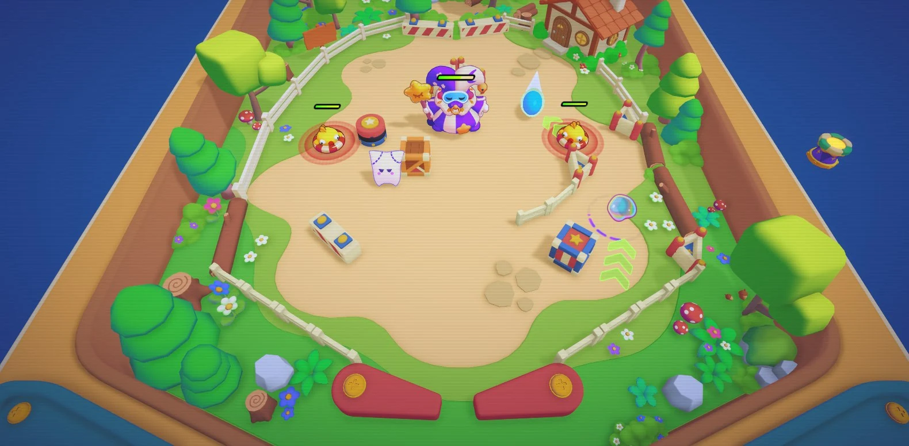
THE FIRST LOOK / 0:30
01 / A GAME OF MOMENTUM
Launch → ricochet → return or dash.
Keep the ball in play. Keep the base safe.
Pull back to charge, release, and let the board turn one shot into a chain of contacts.
Time the flippers to send the ball back into play. Bumper contacts build Rush.
A brief windup, then a targeted burst. Enemy hits build a combo that increases damage.
Launch, ricochet and dash through a Dreamwalker encounter. Controlled inputs and phase setup, captured from the current Unity build.
New capture · Normal speed · 2026-10-20Real Unity captures. Some encounters use controlled setups to make each mechanic clear. Slower playback is labeled; the prototype’s visuals and tuning are still evolving.
02 / SMALL TOYS, BIG PERSONALITIES
Nine current enemy designs.
Distinct silhouettes. Different ways to cause trouble.
Open a character to see its behavior and lookdev sheet.
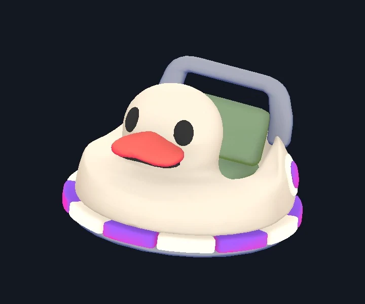
Duck Pod +GROUND MELEEA compact, readable silhouette. Approaches the base and telegraphs its attacks with procedural body motion.
Open lookdev sheet ↗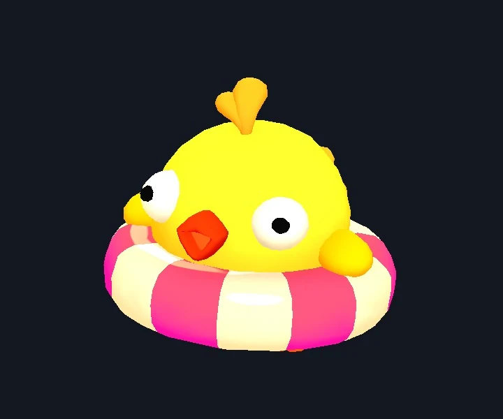
Oops Chick +RANGED PRESSUREWind up, fire, recoil. Anticipation and the flexible comb make its attack timing easier to read.
Open lookdev sheet ↗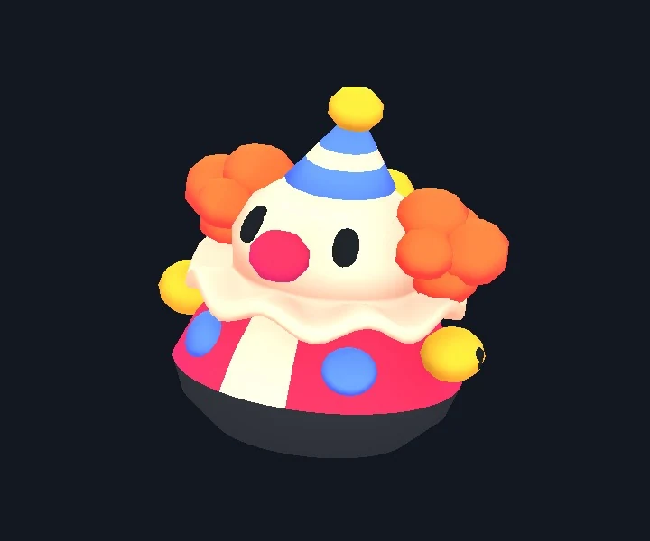
Roly Clown +FIRE & TELEPORTA ranged attacker that changes position between shots. Disappearance and reappearance mark its next attack location.
Open lookdev sheet ↗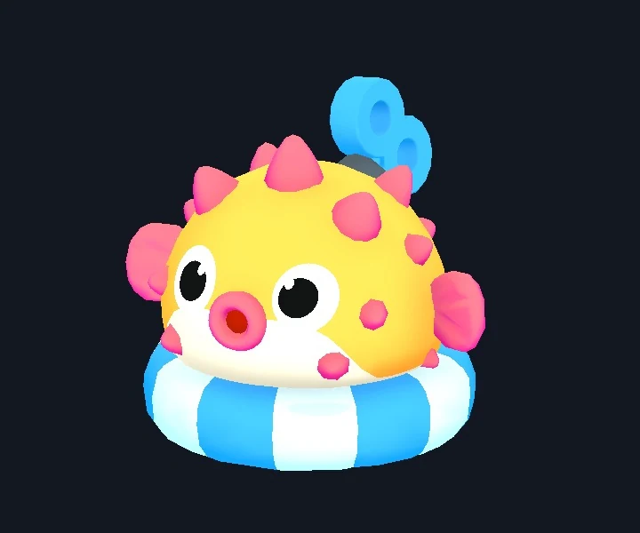
Puddle Puffer +AIR-JET MOVEMENTA hit becomes movement: pressure builds, an air jet propels the body, and reinflation signals recovery.
Open lookdev sheet ↗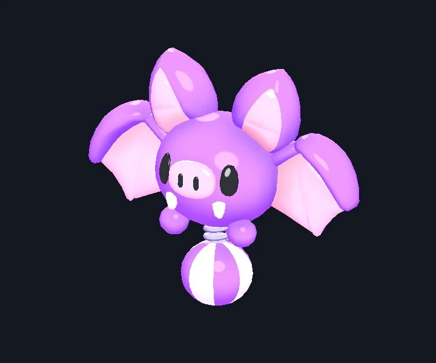
Batloon +FLYING RANGEDFires, takes off and finds a new position. Wing motion and balloon follow-through add weight to its flight.
Open lookdev sheet ↗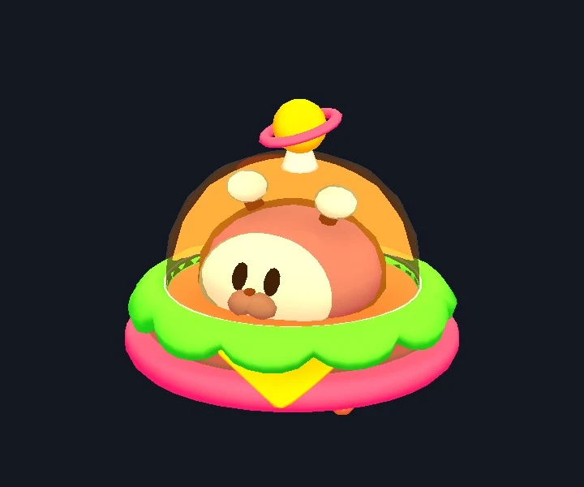
Burger UFO +HOVERING MELEEA toy saucer with a soft impact response. Local dents, directional recoil and elastic recovery sell every collision.
Open lookdev sheet ↗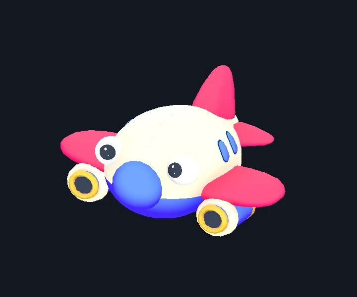
Toy Airplane +FLEXIBLE-WING MELEEA clear plane silhouette supported by flexible wings and a responsive tail. Secondary motion follows the main action.
Open lookdev sheet ↗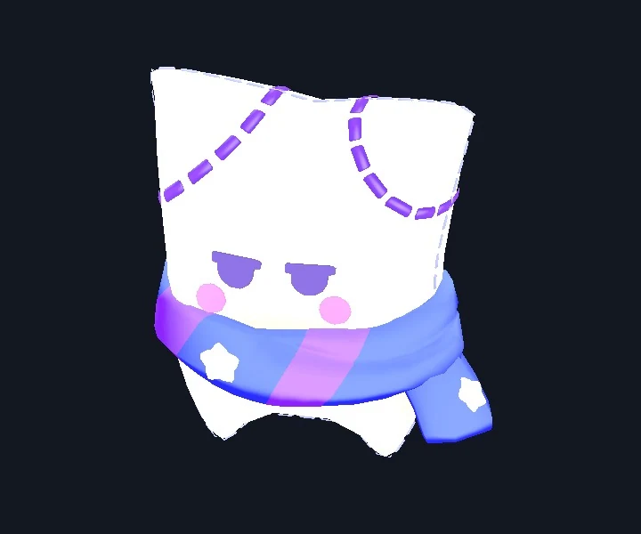
Dozy +SUMMONED PILLOW GUARDPart of Dreamwalker’s summoned defense. Soft landings, idle sway and a scarf variant keep the formation playful.
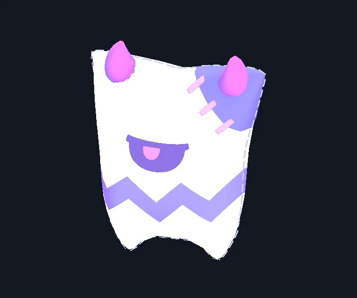
Dizzy +SUMMONED PILLOW GUARDA sharper silhouette in the same soft family. Squash and stretch connects its movement to the rest of the cast.
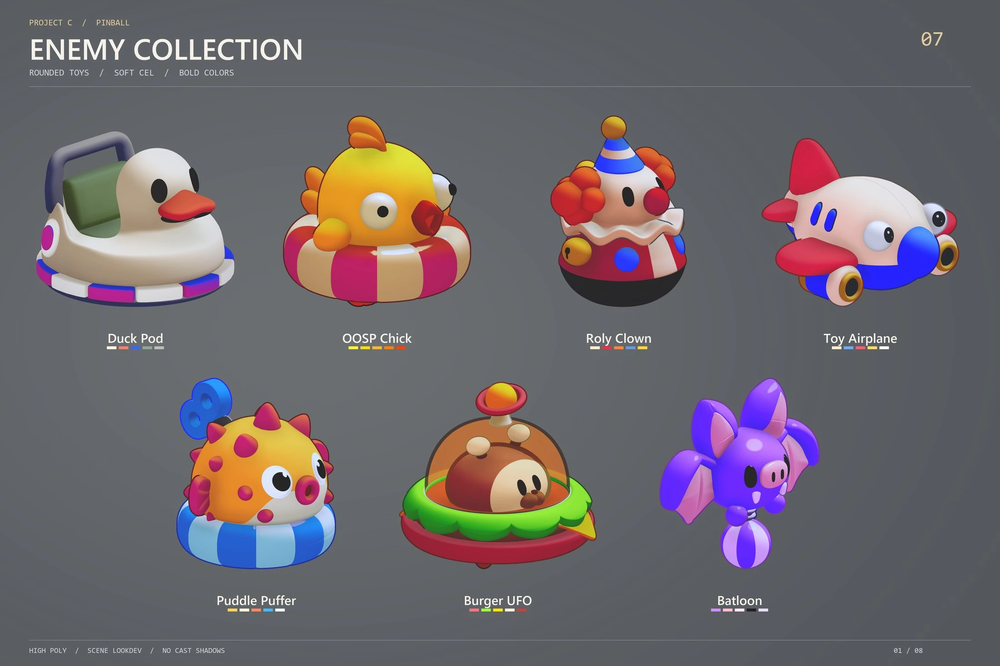
Presentation renders of my original character concepts and 3D models, using high-poly source geometry and scene materials. These are visual studies, not gameplay polygon budgets. Each character sheet includes turnaround views, silhouette, palette and an in-game look.
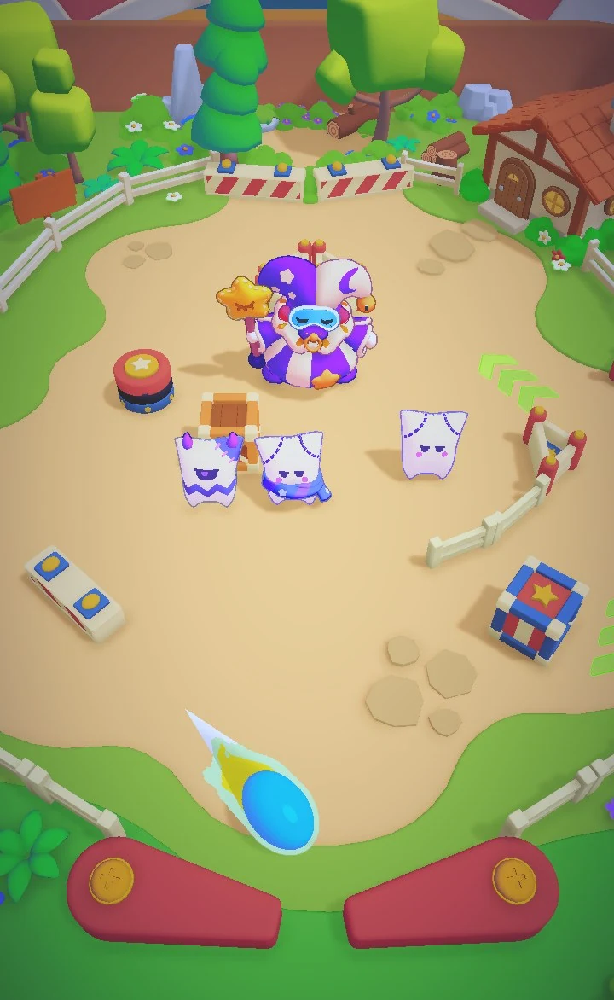
03 / THE SLEEPWALKING CASTER
Turn his own attack
into your opening.
He summons pillow guards, covers the board in sleep bubbles, and attacks with musical notes and a Moon projectile. Later phases add pressure and teleport repositioning.
Anticipation, motion and telegraphs signal the next threat.
Meet it with the ball to send an alarm bell back.
The returning bell deals damage and staggers the boss.
04 / FEEL, BUILT FROM THE INSIDE OUT
Gameplay drives the action.
Motion helps you understand—and feel—it.
Custom swept collision handling, surface responses, flipper returns, one-way portals and dash targeting. ScriptableObject profiles keep the tuning editable.
Procedural anticipation, recoil and settling follow gameplay state. Wings, hats, tails and scarves add secondary motion without hiding the main action.
SoftMotion drives local dents, compression, stretch and elastic recovery. Visual deformation complements the collision and damage systems.
Character previews, deformation authoring, tuning profiles, encounter checks and performance tools support the next round of testing.
05 / AI-ASSISTED 3D MODELING
I use AI to help create and iterate on 3D models, with a clear art direction: rounded shapes, readable silhouettes and a playful, toy-like feel.
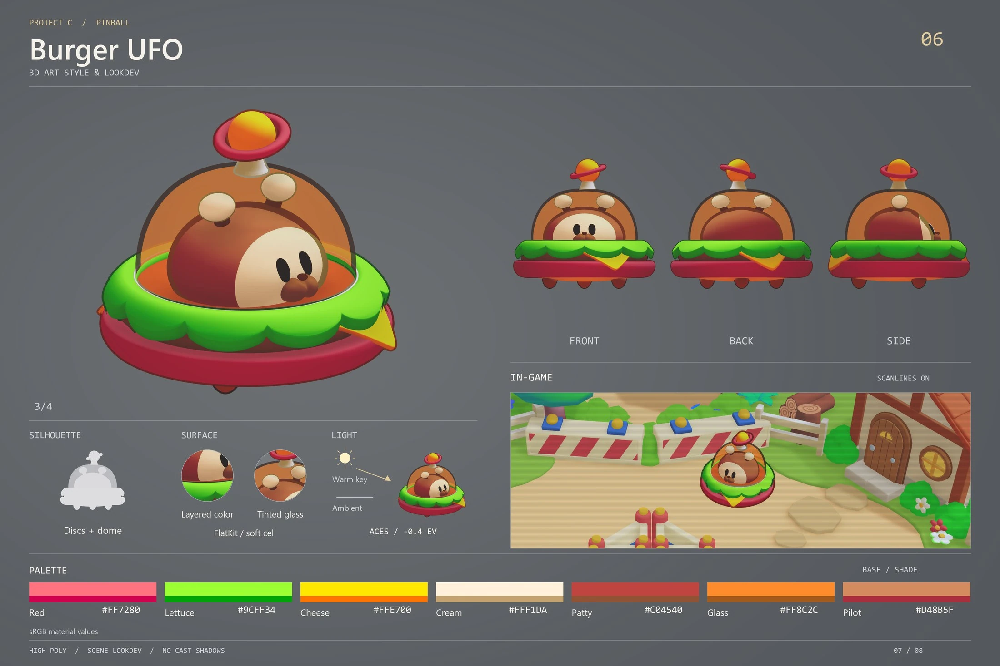
Start with references, proportions and a color palette. Use AI-assisted modeling to explore the 3D form, then review and guide each revision.
Output / a 3D draftRebuild and refine shapes, soften edges and keep parts editable. Reduce geometry while preserving the silhouette and the character’s personality.
Output / refined mesh & materialsVerify imported geometry, materials and proportions under the game’s lighting. Check that the character stays readable in motion and during deformation.
Output / an in-game characterAI helps me iterate on the models. I guide the visual direction and review the result in the game.
I’m building this solo project from scratch. The captures show implemented systems; gameplay balance, visuals and encounters continue to evolve.